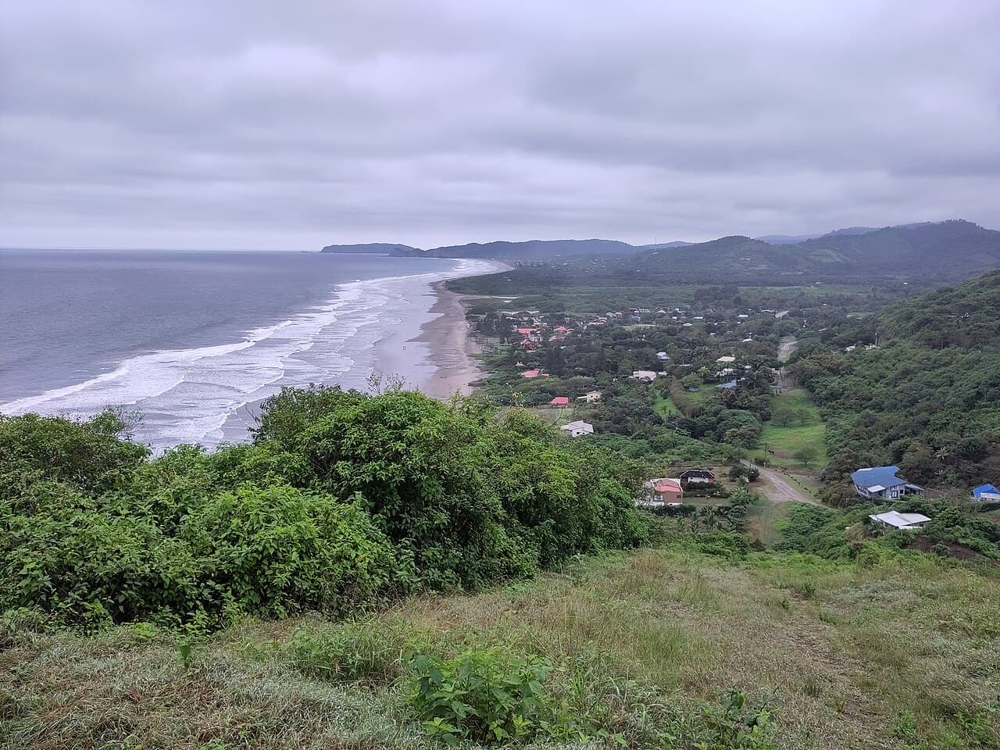

Ayampe
Équateur · surf, baignade, paddle

Un village minuscule entre deux collines vertes, avec une plage de sable ouverte et une vague de gauche facile. Les baleines à bosse passent au large de juin à septembre.
- Lieu
- Équateur
- Niveau
- Débutant
- Activités
- surf, baignade, paddle
- Type d'eau
- Mer / océan
- Coordonnées
- -1.67, -80.78 (position approximative du secteur)
Dangers à connaître
- Courant de retour au centre de la plage.
- Rochers aux deux extrémités.
Le conseil d'Ocean Buddy
Prends le pic du milieu : les bords de la plage cachent des rochers à marée basse.
Ouvrir dans Ocean Buddy Télécharger sur l'App Store
Source : Description historique Ocean Buddy · vérification externe en attente.